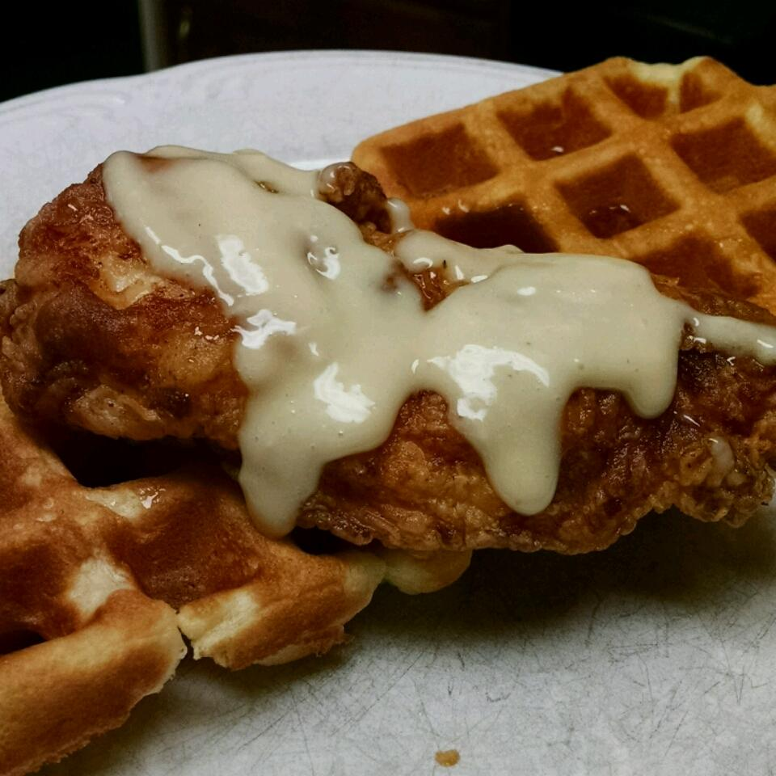

Chicken and Waffles

Description
This recipe has crunch, sweet and spicy, savory all in one.
- Prep time: 15 mins
- Cook time: 30 mins
- Additional time: 20 mins
- Total time: 1 hr 5 mins
- Yield: 4 sandwiches
Ingredients
- 4 eggs
- 1/4 cup heavy cream
- 2 tablespoons cayenne pepper
- 1 tablespoon salt
- 1 tablespoon ground black pepper
- 2 cups all-purpose flour
- 1 cup cornstarch
- 1 tablespoon salt
- 1 quart peanut oil for frying
- 8 chicken tenders
- 1 cup mayonnaise
- 1/4 cup maple syrup
- 2 teaspoons prepared horseradish
- 1 teaspoon dry mustard powder
- 12 slices bacon
- 8 thin slices Cheddar cheese
- 8 plain frozen waffles
This recipe was written by user Switzer
for AllRecipes.com. View the original recipe
here.